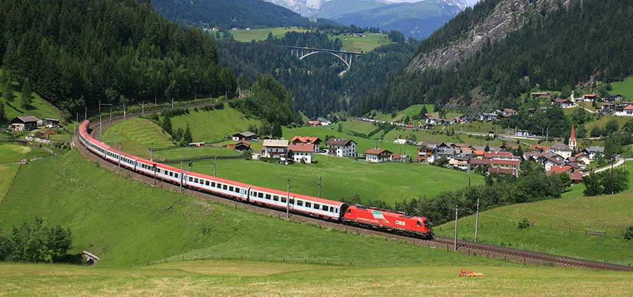
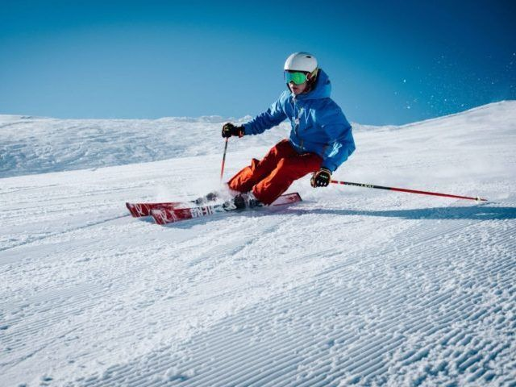
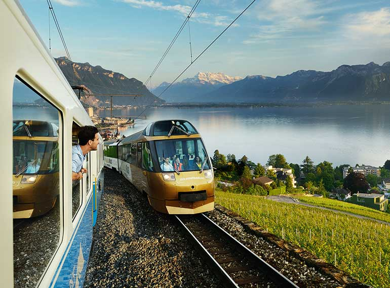
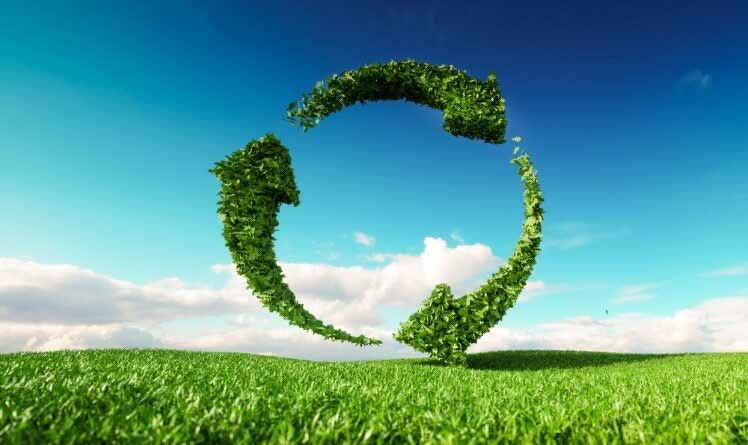
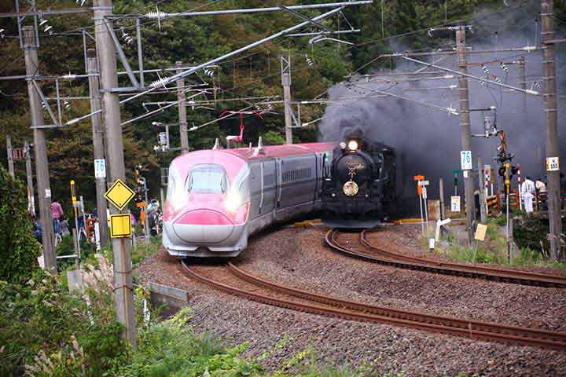

Grønne Rejser
Aktive Rejser
Rejserne herunder, er inspiration for jer som godt kan lide muligheden for at komme ud at bruge kroppen på rejsen. Der findes mange måder og niveauer man kan være aktiv på, lige fra lange gåture til skiløb ned ad bjerge. Derfor har vi forsøgt at dele vores rejser lidt op så du kan finde ud af netop hvor aktiv du har lyst til at være i din ferie. Her har vi blandt andet samlet de af vores rejser, som egner sig perfekt til vandring, helt op til vores skirejser. I togets stressfrige omgivelser er det muligt at kombinere en aktiv ferie uden stressen ved at skulle bruge bil, bus eller fly, så gør rejsen til en del af ferien med en togrejse.
Vi udvider hele tiden vores sortiment af togrejser og der vil med tiden komme flere rejser under vores kategorier. Så følg med her, hvis I ønsker at holde jer opdaterede om vores aktive rejser, eller kontakt os hvis I har en god idé til nye aktive rejser.
Skiferie
Tag med GrønRejs på klimavenlig skiferie til Åre i Sverige og udforsk nordens bedste alpine skiområde. Området er opdelt i en højzone og en lavzone. I lavzonen foregår skiløbet under trægrænsen, og her finder man flere røde og sorte løjper, også kendt fra alpint VM. Højzonen kommer man til via gondolen, og herfra kan man stå på ski ned mod byen. Oplev den fantastiske stemning i Åre by, hvor shopping, restauranter, caféer og barer, skaber god energi, når man er færdig på pisterne.
Oplevelsesferie
I vores plevelses ferier kan du opleve det varme middelhavsområde, Schweiz eller Norge. Tag på en afslappende ferie i skønne omgivelser. Udforsk byerne, deltag i vinsmagning eller tag på vandreture omgivet af smuk natur. I norge er der også mulighed for både at stå på ski og se nordlyset.
Bæredygtig
Et fly udleder næsten tre gange så meget CO2 pr. kilometer pr. person sammenlignet med en bil – ikke særligt bæredygtigt. Og mere end 16 gange så meget som et el-drevet tog fordi dette tog kan få strøm fra grønne energikilder som vindmøller, solceller mm. Og da vi flyver meget længere, end vi eksempelvis kører i en bil, så sviner fly voldsomt meget mere. Ikke nok med at fly udleder meget mere CO2 end tog, de er ofte også mere ukomfortable at rejse i end tog. I en verden der vil være mere bæredygtig, samtidigt med at vi søger komfort og afslappethed underen rejse, så giver det i stigende grad mere mening at vælge toget som dit foretrukne transportmiddel frem og tilbage.
Tog tradition
Damplokomotivet blev først opfundet i 1802, og i de 200 år har toget udviklet sig drastisk. Fra at fragte gods i kilometerlange fragttoge til helt almindelig hverdagstransport, så kan toget næsten alt. Vi har opbygget en tradition med at bruge tog til enhver form for rejse, og det gælder også lang distance rejser. Vi vil gerne genoplive denne, lidt glemt, tradtion for lang distance rejser ved at tilbyde rejser rundt omkring Europa, og med moderne teknologi er det muligt at gøre rejsen både grøn og komfortabel på samme tid.
